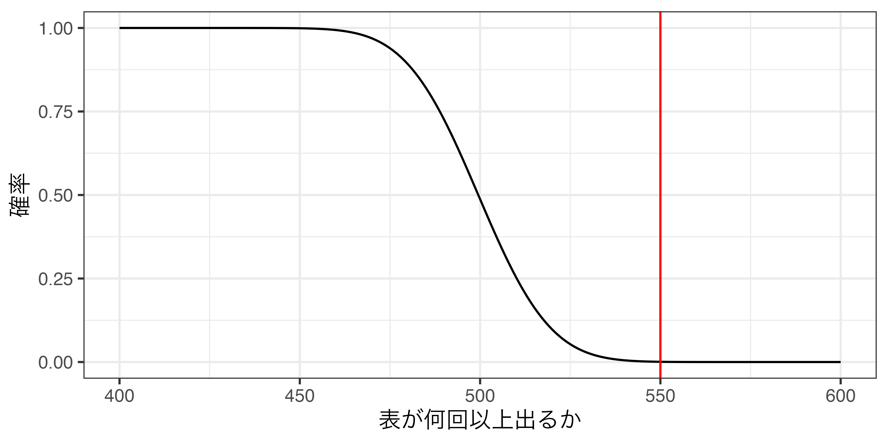
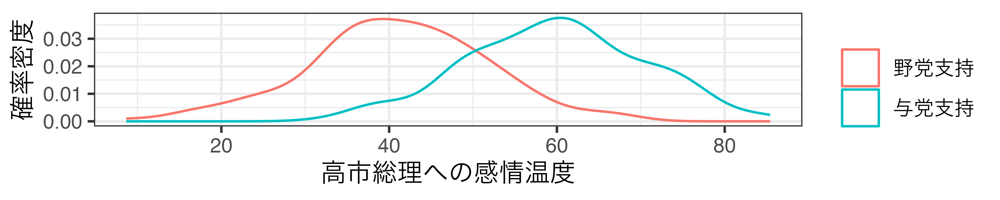
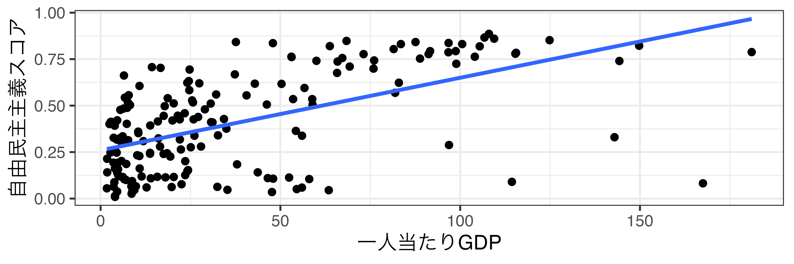

06/共変関係
現代政治分析入門1
2026-05-26
出席登録をお願いします

今日の目次
- はじめに
- 共変関係とは何か
- 統計的仮説検定
- 共変関係の検証方法
- 反証主義
- まとめ
はじめに
先週のRPより (1/3)
何故メディアによっては重ね聞きを実施しないのか。コストがかかる以外にも何か理由があるのか気になった。
テレビを見ていて政権支持率や総裁選の世論調査など見ていて局により異なることが多いと思っていたが、重ね聞きをするかしないかでその会社の思うように多少コントロールしていることを知った。
オールドメデイアにはバイアスがあるので政治腐敗より問題だと思います
一つの会社のみの世論調査を信じるというのはやめていろいろなのを見たうえで判断しようと思った。（参考）
先週のRPより (2/3)
個人的に米国大統領の世論調査に反した結果を疑問に思っていたため、社会的望ましさバイアスという単語を知ったことで納得することができた。
米大統領選でのトランプ支持のバイアスは、日常の同調圧力に通じると思った。周囲の目を気にして、場の空気に合わせた発言をしてしまう心理と似ていると感じた。
選挙では、本心を隠すような心理学などの分野も考慮に入れて、より正確な確率を導くことはできないのか。（参考）
先週のRPより (3/3)
操作化の、妥当性、のところがいまいち理解できなかったのでもう一回ちゃんと理解したいなと思った。
操作化の信頼性と妥当性についてよくわかっていないのでもし可能であれば、もう一度説明していただきたいです。
本日の目的と到達目標
目的
因果関係が満たすべき要件の1つである「共変関係」について改めて考える。統計的仮説検定を学んだ上で、共変関係を適切に検証できるようになるための知識を習得する。また、科学哲学における反証主義という考え方を知り、統計的仮説検定そして反証可能性の知的背景を理解する。
到達目標
- 「変数の値の変化」を意識しつつ共変関係の具体例を作ることができる。
- 具体例を用いながら、統計的仮説検定とは何かを説明できる。
- 変数の種類や共変関係のパターンに応じて適切な分析の方法を選択できる。
- 「帰納」という言葉を用いて科学哲学における反証主義の議論を説明できる。
本日の授業の位置付け

共変関係とは何か
復習：因果関係の3条件
- 共変関係
- 原因の時間的先行
- 他の変数の統制
共変関係
独立変数の値の変化と従属変数の値の変化が同時に生じていること
- 「値の変化」が生じている必要
- 例：洋画を見る時間増→TOEICの成績上昇
- 例：身長が高い→収入が多い
- 比較と共変関係
- 例：大学生の基礎学力→比較がない
- 例：国際学力調査→比較があやしい
因果、変数、共変関係
- 仮説「森林伐採が地球温暖化を引き起こしている」
- 原因：森林伐採→結果：地球温暖化
- 独立変数：森林面積→従属変数：地球の気温（操作化）
- 共変関係「森林面積が減る→地球の気温の上昇」
- 裏を返せば「森林面積が増える→地球の気温の低下」
Think-pair-share (-10分)
- Think (2-3分)…1人で次の作業
- 因果関係をめぐる仮説を作る
- 第2回のものを再利用可
- この仮説の独立変数／従属変数は？
- 原因結果を「変数」に置き換える（操作化する）
- 例：森林伐採→森林面積
- 原因結果を「変数」に置き換える（操作化する）
- 共変関係はどうなっている？
- 独立変数の値がどう変化→従属変数の値はどう変化？
- 例：森林面積減→気温上昇
- 独立変数の値がどう変化→従属変数の値はどう変化？
- 因果関係をめぐる仮説を作る
- Pair (2-3分)…ペアで共有
- Share (1-2分)…全体に共有（WebClassチャット）
統計的仮説検定
アンケート
超能力者を自称する男が現れて、「このコインに念力をかけて、表を出しやすくした」と言ってきました。
あなたはそれが本当か確かめるために、1000回このコインを投げてみることにしました。
何回以上表が出たら念力の存在を信じますか。
- 550回以上
- 700回以上
- 900回以上
WebClassアンケートで回答してください
統計的仮説検定
statistical hypothesis testing
「その出来事は偶然発生したのか否か」を判別する思考枠組み
仮説検定の手順：
- 帰無仮説 (null hypothesis)…「その出来事は偶然である」という仮説
- 帰無仮説が正しいとしたら、標本が得られる確率を計算
- 確率が低ければ、帰無仮説は間違っている（＝偶然ではない）とみなす
- 通常1%、5%、10%が基準
コイン投げの例
帰無仮説「表が出る確率は50%」のもとで1000回投げる
共変関係の検証方法
変数の分類
カテゴリ変数…「どのカテゴリに分類されるか」を表す変数
- 性別、学歴、支持政党…
連続変数…連続した値を持つ変数
- 身長、体重、所得…
変数の組み合わせと検証方法
- カテゴリ×カテゴリ…クロス表の作成、カイ二乗検定
- カテゴリ×連続…平均値の比較、t検定
- 連続×連続…散布図、相関係数、t検定
カテゴリ×カテゴリ
クロス表を作成し、カイ二乗(\(\chi^2\))検定
例：「与党を支持するかどうか」と「内閣を支持するかどうか」に共変関係はあるか？
| 内閣支持 | 内閣不支持 | 合計 | |
| 与党支持者 | 140 (70%) | 60 (30%) | 200 (100%) |
| 野党支持者 | 30 (20%) | 120 (80%) | 150 (100%) |
カイ二乗検定
- 帰無仮説「政党支持者間で内閣支持の確率は同じ」
- この結果になる確率は\(2.2\times10^{-16}\approx0\)
カテゴリ×連続
平均値の比較とt検定
例：「与党を支持するかどうか」と「高市総理への感情温度」に差はあるか
- 高市総理に対する感情を0度（強い反感）から100度（強い好感）で回答

t検定
- 帰無仮説「政党支持者間で平均感情温度は同じ」
- この結果になる確率は\(2.2\times10^{-16}\approx0\)
連続×連続
散布図、相関係数、t検定
例：「経済的な豊かさ」と「民主主義の程度」には関連があるか

相関係数…2変数間の関連性の強さを表す指標
- -1（右下がり）〜1（右上がり）の値を取る
- 一人当たりGDPと自由民主主義スコアの相関0.56
- t検定＝「相関係数が0である」帰無仮説は棄却
ワーク
「共変関係とは何か」で作った仮説を思い出してください。
この仮説の変数はカテゴリ×カテゴリ、カテゴリ×連続、連続×連続のどれになりますか。
仮説の内容とともにWebClassチャットに書き込んでください。
反証主義
演繹と帰納
演繹 (deduction)…一般的な前提から個別的な推論を導く
帰納 (induction)…個別的な前提から一般的な推論を導く
クイズ：以下の推論は演繹？帰納？（WebClassクイズ）
- すべての人は死ぬ運命だから、私もいつか死ぬ。
- 川口で移民が暴れ回っている。移民は危険に違いない。
- 駒澤は仏教系の大学なので、この教室にいる人たちも仏教徒が多いだろう。
- 中東の産油国は独裁国家が多い。資源を持っていると民主主義が育ちにくいのだろう。
帰納の正当化問題
デイヴィッド・ヒュームの提起
- 演繹…前提が正しければ結論も常に正しい
- 帰納…前提が正しくても結論が常に正しいとは限らない
仮説の検証と一般化
- 仮説と整合的な分析・実験結果が出た
- 他でも同じ結果が出るかどうかはわからない
David Hume
(1711-76)
反証主義
カール・ポパー「仮説を確証することはできず、反証することしかできない」→反証可能性
統計的仮説検定の考え方
- 帰無仮説「偶然ではない」の反証
批判：厳しすぎる
- 「偶然でないとは言えない」→だから何？
- 「偶然ではないから何かある」という飛躍の必要性
 Karl Popper
Karl Popper
(1902-94)
まとめ
本日の目的と到達目標
目的
因果関係が満たすべき要件の1つである「共変関係」について改めて考える。統計的仮説検定を学んだ上で、共変関係を適切に検証できるようになるための知識を習得する。また、科学哲学における反証主義という考え方を知り、統計的仮説検定そして反証可能性の知的背景を理解する。
到達目標
- 「変数の値の変化」を意識しつつ共変関係の具体例を作ることができる。
- 具体例を用いながら、統計的仮説検定とは何かを説明できる。
- 変数の種類や共変関係のパターンに応じて適切な分析の方法を選択できる。
- 「帰納」という言葉を用いて科学哲学における反証主義の議論を説明できる。
次回までに
事後学習
- 授業資料を見直し、目標到達をセルフチェック
- WebClass 上でのリアクションペーパー入力（金曜日まで）
事前学習
- 教科書（久米6章）を読み、WebClass 上でのチェックフォーム記入

共変関係